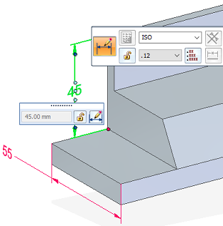
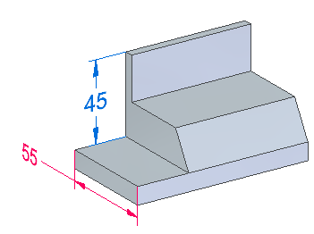

Change dimension behavior
You can change a dimension from driving to driven, or from driven to driving, on any dimension editing command bar where the lock icon is displayed.

-
Select the dimension you want to change.
-
On the command bar, click the /
 Driving/Driven Dimension button to change the state of the selected dimension between driving (the lock icon
is displayed) and driven (the unlocked icon is displayed).
Driving/Driven Dimension button to change the state of the selected dimension between driving (the lock icon
is displayed) and driven (the unlocked icon is displayed).-
—When you set a dimension to driving, its value controls the size, orientation, or location of connected sketch elements. Its dimension value is prevented from being changed when a connected face is moved or sized.
-
—When you set a dimension to driven, its value is controlled by the element it refers
to, or by a formula or variable you define. When a dimension is driven, and faces
connected to the dimensioned edge are modified, the dimension value is allowed to
change.
When you change the dimension behavior, the color of the dimension also changes.
In the modeling environment, the default display color of a driving dimension is red, and a driven dimension is blue.

In draft, the default color of a driving dimension is black/white, and a driven dimension is dark cyan.
-
-
You also can use the shortcut menu of a selected dimension to identify if it is driving or driven and to change its behavior. The following commands are available:
-
Driving Dimension—Modifies a dimension to make it driving.
-
Driven Dimension—Modifies a dimension to make it driven.
-
-
If the Driving/Driven Dimension button is not available, select the Maintain Relationships command on the Home tab or the Sketching tab.
How do I
Edit a 2D dimension (sketch, profile, draft)Move a dimension
Display a half dimension
Set terminator size and shape
Change the orientation of a dimension
Break a dimension projection line
Remove breaks from a dimension projection line
Change the parent of a dimension by dragging it
Reattach a dimension or annotation using the Attach Dimension command
Add and remove jogs on a dimension
Activate a part for dimensioning in a draft quality view
Learn more
Dimension edit handlesSnap indicators for dimensions
Look up more details
Attach Dimension commandAdd Projection Line Break command
Remove Projection Line Break command
Activate Part command